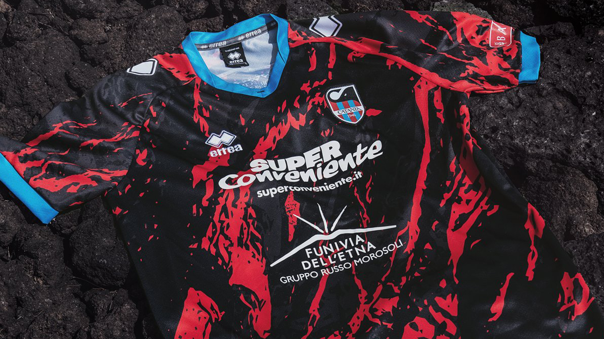

Catania FC Third Kit
2023

In the present year, my journey brought me to the picturesque city of Catania, a place steeped in history and adorned with the passion for football. Navigating the charming streets, I found myself at the heart of the local fervor—the Stadio Angelo Massimino, home to Catania Calcio. Exploring the city's football culture, I discovered the Catania kit, a vibrant emblem of the team's identity. The jersey, adorned with the fiery red and blue hues of the Sicilian club, captured the essence of Catania's footballing spirit. Wearing the Catania kit felt like a symbolic immersion into the city's unique footballing legacy. The matchday experience, resonating with the enthusiastic cheers of local fans, became a memorable chapter in my journey. The Catania kit, now a cherished token, serves as a tangible reminder not only of the travel through this enchanting city but also of the warmth and hospitality that define Catania and its football community.